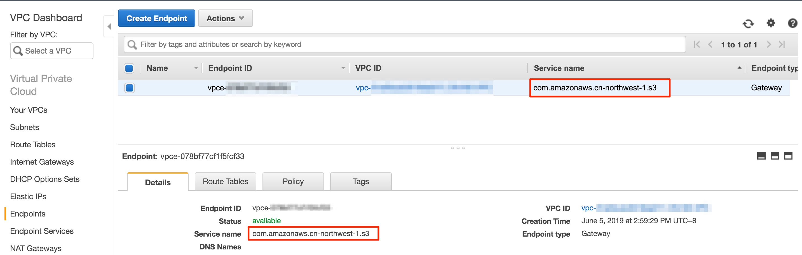
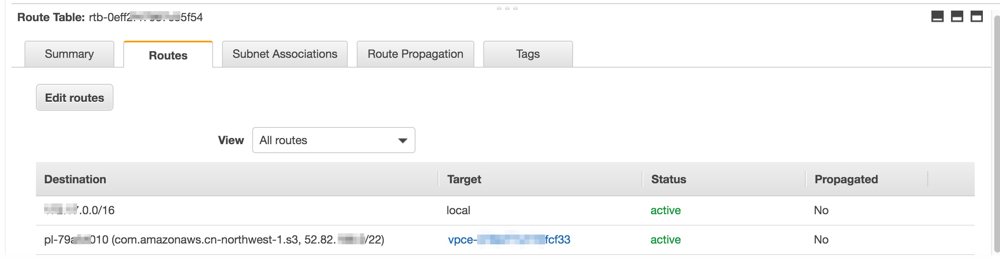

如何在Private Subnet下使用S3 Endpoint?
测试说明：EC2在一个Private Subnet下，并且没有NAT,只有一个VPC的Local Route,然后添加S3 Endpoint,指向这个EC2所在的Subnet，确保这个Subnet存在了路由指向了这个S3 Endpoint。
坑：MD，我以为在Endpoint页面看到的com.amazonaws.cn-northwest-1.s3，就是endpoint的访问URL，但是并不是啊，啊！！！！！
需要看去文档：https://docs.amazonaws.cn/general/latest/gr/rande.html#cnnorthwest_region ,
我当前是宁夏，所以是这个路径：s3.cn-northwest-1.amazonaws.com.cn
如图示：

系统层面实际上应该访问的是：
1
2
3
4
5
6
7
8
9
10
11
12
13
14
15
16
17
18
19
20
21
22
23
24
25
26
27
| [root@ip-172-17-17-222 ~]# nslookup s3.cn-northwest-1.amazonaws.com.cn
Server: 172.17.0.2
Address: 172.17.0.2#53
Non-authoritative answer:
Name: s3.cn-northwest-1.amazonaws.com.cn
Address: 52.82.190.29
[root@ip-172-17-17-222 ~]# ping s3.cn-northwest-1.amazonaws.com.cn
PING s3.cn-northwest-1.amazonaws.com.cn (52.82.188.33) 56(84) bytes of data.
64 bytes from 52.82.188.33 (52.82.188.33): icmp_seq=1 ttl=60 time=0.201 ms
64 bytes from 52.82.188.33 (52.82.188.33): icmp_seq=2 ttl=60 time=0.233 ms
--- s3.cn-northwest-1.amazonaws.com.cn ping statistics ---
2 packets transmitted, 2 received, 0% packet loss, time 1001ms
rtt min/avg/max/mdev = 0.201/0.217/0.233/0.016 ms
[root@ip-172-17-17-222 ~]# ping www.baidu.com
PING www.a.shifen.com (220.181.38.149) 56(84) bytes of data.
--- www.a.shifen.com ping statistics ---
3 packets transmitted, 0 received, 100% packet loss, time 2049ms
[root@ip-172-17-17-222 ~]# aws s3 ls --region cn-northwest-1
2019-01-18 01:59:23 bj-s3-xxxxx
2019-04-27 11:31:20 cf-templates-yhk48sv0blj1-cn-north-1
2019-03-28 03:22:54 xxxxxx
2019-06-04 04:01:17 nx-s3-xxxxx
2018-09-14 05:59:34 xxxxxxx
|
总结：EC2是通过Role授权的方式来进行调用的，网络确实没有走公网。因为subnet里面直接加了一个路由。直接怼到那个公网IP.由于这个原理，所以只能每个Subnet加一个。也就是在AZ层面有效。扩展想一下，如果是HA想调用EC2呢？需要两边的EC2都调整一下。

个人简介：男，80后，Linux（SuSE/RedHat/Ubuntu）、VMware、AWS都会一些。